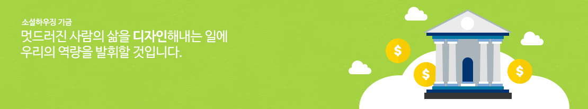
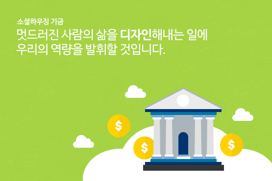
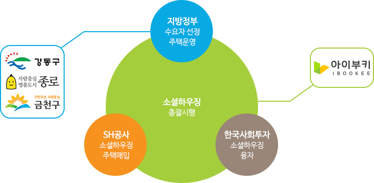
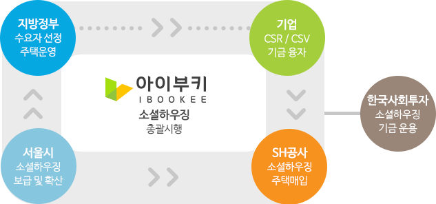

기금


현재 아이부키는 금천구 홀몸어르신 맞춤형 주택개발 사업의 성공사례를 기반으로, 다양한 형태의 수요자 맞춤형 주택개발 사업의뢰를 받고 있습니다.
홀몸어르신 맞춤형 주택개발 사업은 금천구와 한국사회투자, SH공사와의 공조를 통해 진행되었습니다.
우선 금천구에서 입주자들을 선정한 후에, 한국사회투자의 소셜하우징 기금을 통해 건축이 시작되었습니다.
아이부키는 입주 예정 어르신들을 직접 만나 뵈면서 보린주택만의 수요(엘리베이터, 작은노인정 등)를 디자인 설계에 구현하고, 사업 전반에 걸쳐 필요한 법적 조치를 취했습니다.
완공 후 주택을 SH공사에 매각하고, 금천구에서 운영하는 것으로 시행과정이 완료되었습니다.

현재 많은 기업에서 지역사회와의 공유가치창출(CSV : Creating Shared Value)을 도모하고 있으나, 지역과 기업에 실질적인 득이 되는 사업 아이템을 찾기가 쉽지 않은 실정입니다.
이에 아이부키는 초기 소셜하우징 사업자금을 안정적으로 확보하고, 기업은 사회공헌실적과 더불어 융자를 통한 수익창출까지 가능한 기업연계형 소셜하우징 모델을 구축하였습니다.
기업연계형 소셜하우징 모델의 가장 큰 차별성은 초기 자금을 기업의 기금 융자를 통해 해결하는 것입니다.
기업의 CSR 자금의 일부를 소셜하우징 기금으로 전환하여, 한국사회투자에서 소셜하우징 기금을 운용합니다.
아이부키는 해당 기금을 기반으로 현재 지방정부로부터 유입되고 있는 소셜하우징 사업 수요에 부응하여 소셜하우징 사업을 확산시키고, 사업의 전 과정을 총괄 운영합니다.
아이부키의 기업연계형 소셜하우징 사업은
1) 지역의 실질적인 주거복지 증진에 기여합니다.
2) 기업 사회공헌사업의 수익창출 모델이자 훌륭한 기업 홍보사례로 자리합니다.
3) 기존 소셜하우징 사업의 자금규모와 기간의 한계를 극복한 혁신적 대안입니다.
